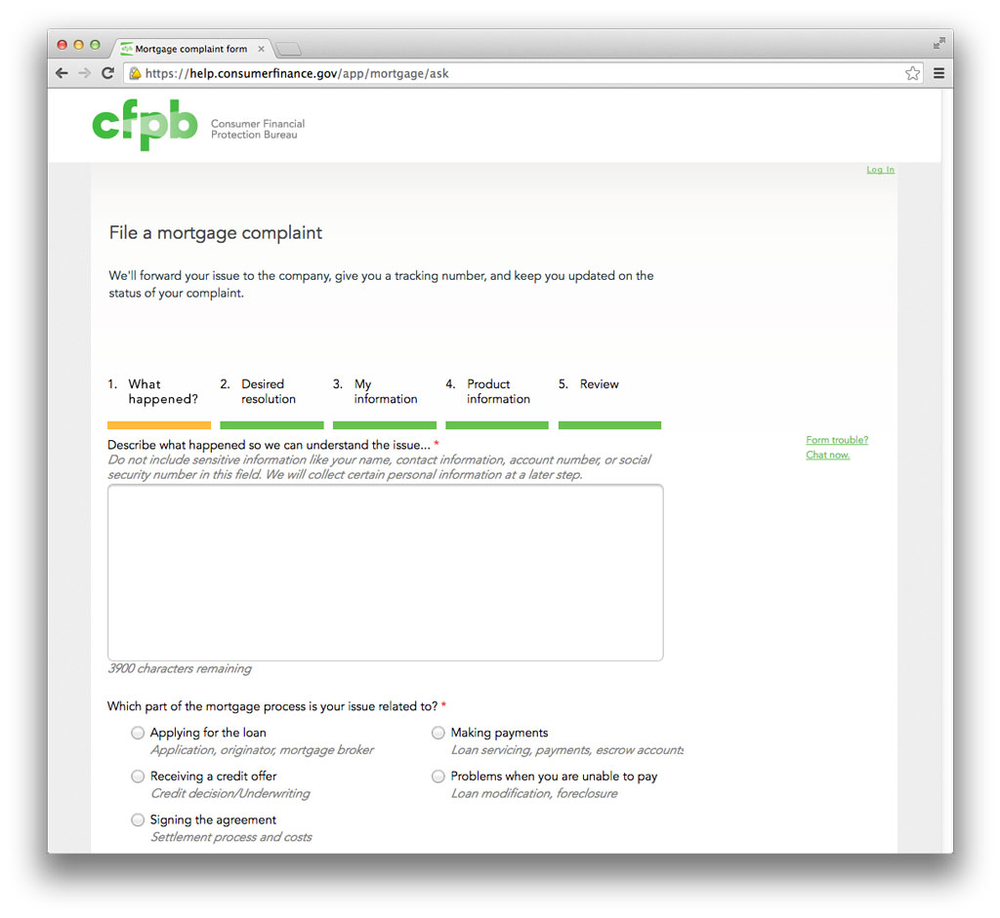

One of my first projects as a fellow at the Consumer Financial Protection Bureau (CFPB) was to work with a team to redesign complaint forms for consumers. If the bureau only provided a single service to the American public it would be to receive and assist in resolving complaints about consumer financial products. It’s not only a powerful tool for users to find some resolution to their grievances against financial products or services, but also contributes to the CFPB’s database, allowing them to spot patterns of abuse against which they can take action or inform their rule-writing and regulation. The original form, which is still in use for some products, was developed by a contractor and was about as bare-bones as could possibly be (see image below).
 See the old form still in use
{kind=link}
There was nowhere to go but up. We identified multiple avenues to improve the experience and quality of information being gathered. There needed to be clearer organization, a lot more explanatory text to add context, and much more feedback for each form field in terms of success and failure states. Visually we made the forms much friendlier, with clearer hierarchy of information and a look more closely aligned with the CFPB’s brand.
{kind=link}
With the forms that have been rolled out with our redesign, completion rates are nearly 40% higher than the original forms and there are far fewer text fields filled in with the wrong information. In addition we've advised the bureau to phase out its current database in order to allow for the development of a single intelligent complaint form. Often users put their complaints in the wrong form, such as using a mortgage form to complain about a debt collector harassing them about their mortgage.
{kind=link}